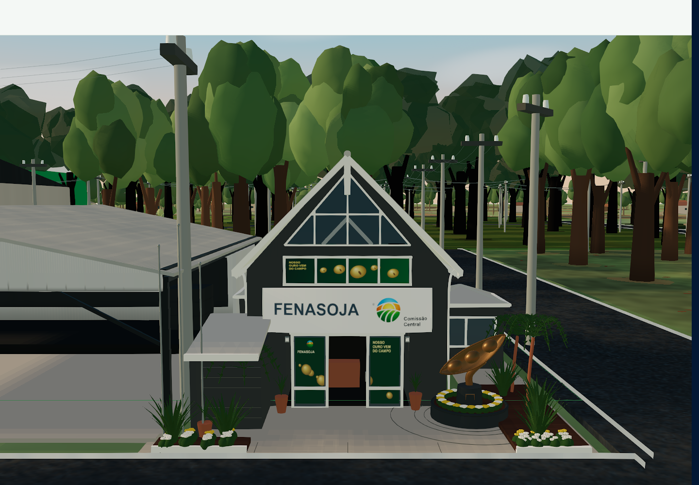
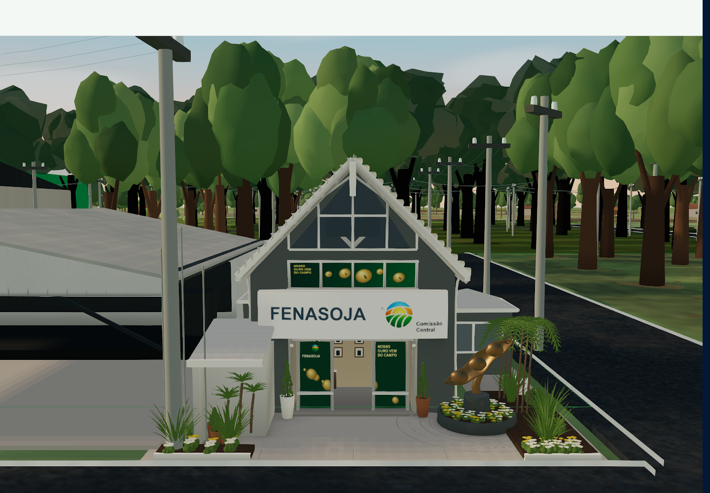

Sede Fenasoja
Primeiro passe e refinamento arquitetônico, capturados no Commercial Map pela mesma câmera. O comparador usa somente imagens do aplicativo WebGL em execução.


Primeiro passe · 0a2c6a78
Refinamento final
Arraste o controle ou use as setas do teclado. À esquerda, primeiro passe; à direita, versão final.